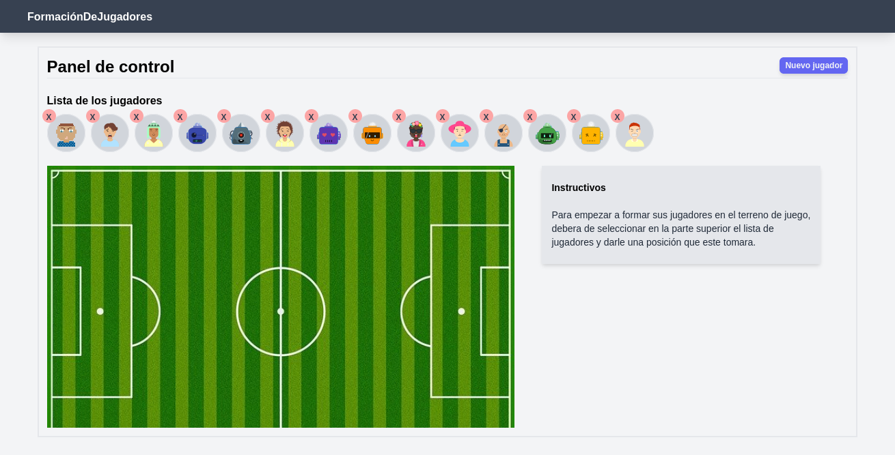
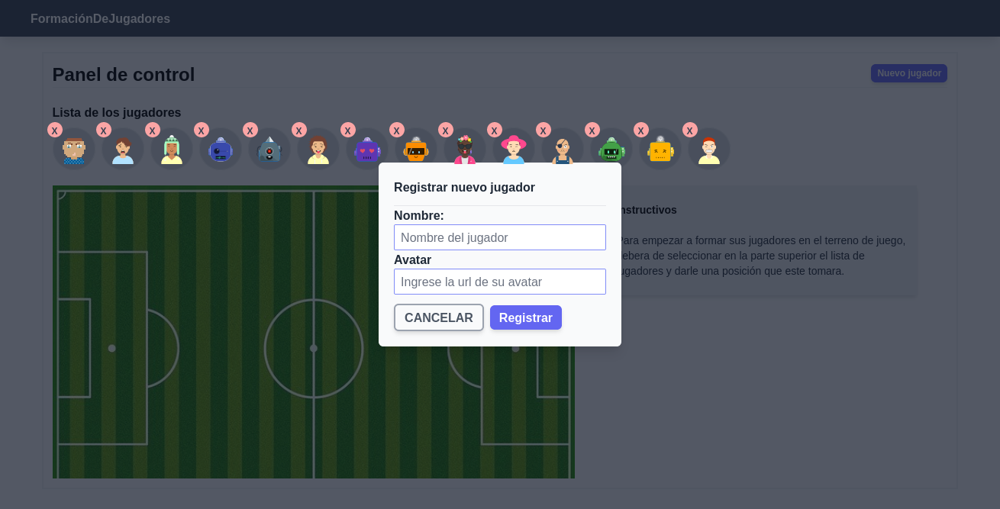
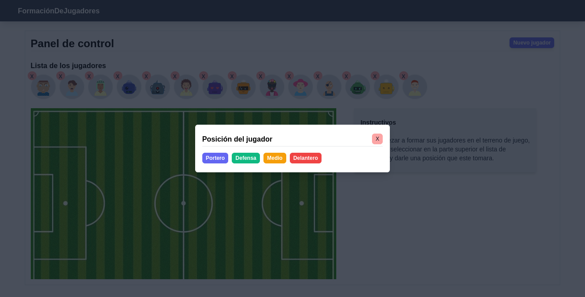
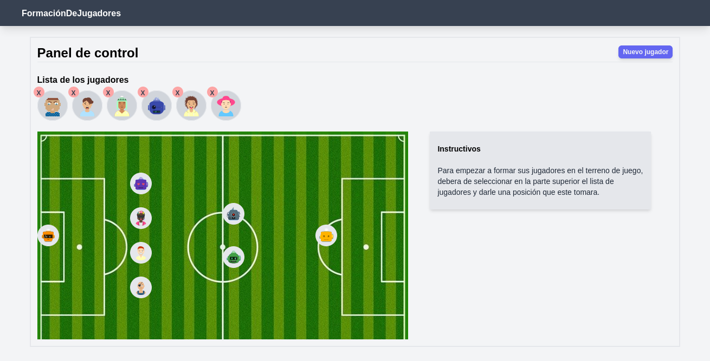

Alineación de equipo
Es una aplicación que permite gestionar la alineación de un equipo deportivo de fútbol, en la cual el DT puede agregar sus jugadores y después alinear en el campo de juego.
Descripción:
La aplicación Alineación permite a los DT registrar jugadores y después poder acomodar el el terreno de juago para tener un breve visualización de como va estar alineado el equipo.
La aplicación cuenta con las funciones de agregar jugadores, quitar jugadores alinear jugadores en el terreno de juego, además como dar la posición del jugador que tomará en el terreno de juego.
En la siguiente carosel encontrara algunas capturas de la aplicación como fue desarrollado.
Panel de control
Registramos un nuevo jugador a la lista de jugadores
Definimos la posición del jugador
Vista de formarción de jugadores
Herramientas y tecnologías para el desarrollo de la aplicación son.
- HTML 5
- CSS 3
- Javascript
- Tailwindcss
- Vue js
- Vuex
Si gusta probar el proyecto visite el siguiente repositorio de Github para descargar el proyecto.
https://github.com/JoelFloresZ/FormacionDeJugadores